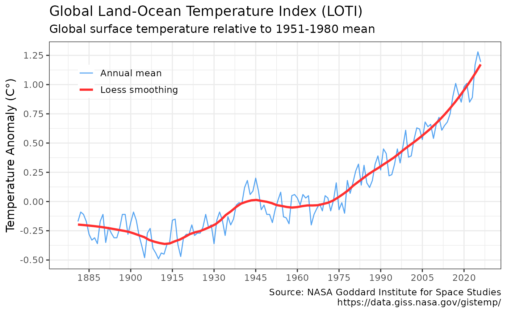

Retrieves the combined global land- and sea-surface temperature anomaly (Land-Ocean Temperature Index, LOTI). Source is NASA/GISS Surface Temperature Analysis (GISTEMP v4), an estimate of global surface temperature change. https://data.giss.nasa.gov/gistemp/
Usage
get_temp(use_cache = TRUE, write_cache = getOption("hs_write_cache"))Value
Invisibly returns a tibble with the annual mean and monthly Combined Land-Surface Air and Sea-Surface Water Temperature Anomalies.
get_temp invisibly returns a tibble with the NASA/GISS annual mean and monthly global temperature anomaly. Data are global from 1880 to present, and represent the deviations from the 1951-1980 mean.
The returned object includes monthly and annual average anomalies, as well as seasonal anomalies. GISS Surface Temperature Analysis (GISTEMP v4) is an estimate of global surface temperature change.
Data are updated around the middle of every month using current data files from NOAA GHCN v4 (meteorological stations) and ERSST v5 (ocean areas). Station data are combined as described in Hansen et al. (2010) https://data.giss.nasa.gov/gistemp/references.html and Lenssen et al. (2019) https://www.giss.nasa.gov/pubs/abs/le05800h.html
References
GISS Surface Temperature Analysis (GISTEMP v4): https://data.giss.nasa.gov/gistemp/
GISTEMP Team, 2020: GISS Surface Temperature Analysis (GISTEMP), version 4. NASA Goddard Institute for Space Studies.
Lenssen, N., G. Schmidt, J. Hansen, M. Menne, A. Persin, R. Ruedy, and D. Zyss, 2019: Improvements in the GISTEMP uncertainty model. J. Geophys. Res. Atmos., 124, no. 12, 6307-6326, doi:10.1029/2018JD029522. https://www.giss.nasa.gov/pubs/abs/le05800h.html
Author
Hernando Cortina, hch@alum.mit.edu
Examples
# \donttest{
# Fetch temp anomaly from cache if available:
anomaly <- get_temp()
#
# Force cache refresh:
anomaly <- get_temp(use_cache=FALSE)
#
# Review cache contents and last update dates:
hockeystick_cache_details()
#> <hockeystick cached files>
#> directory: /home/runner/.cache/R/hockeystick
#>
#
# Plot output using package's built-in ggplot2 settings
plot_temp(anomaly) # }
